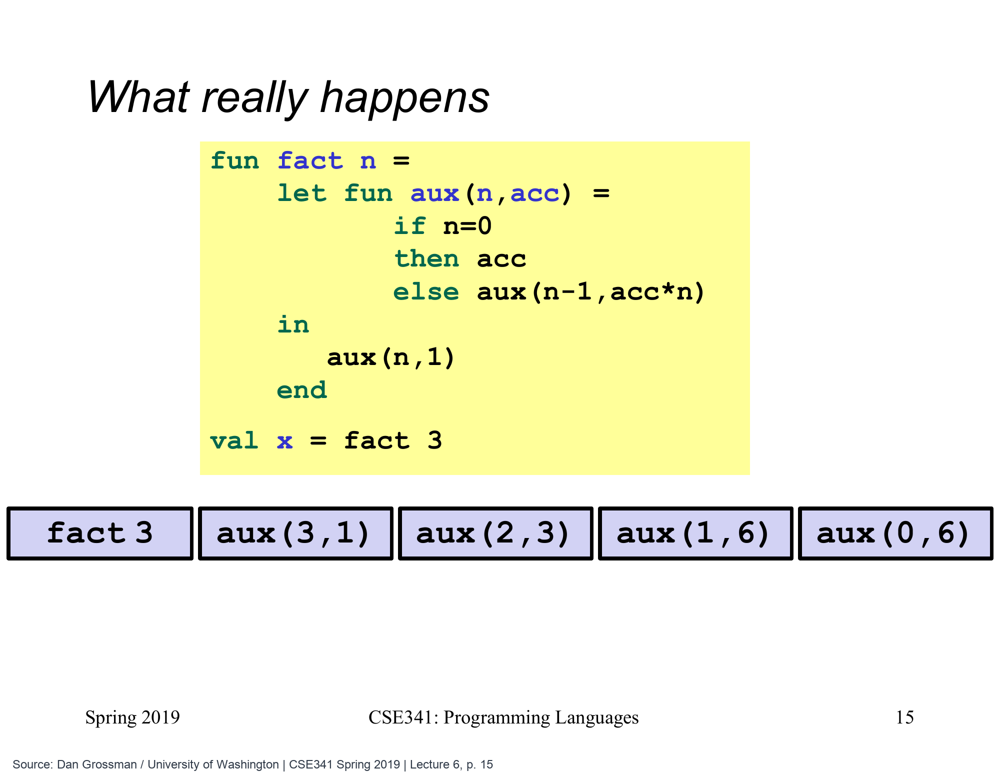

不把工作留到回来以后，结果先存在哪里
上一篇的 fact1 会留下乘法，等待递归返回。现在只解决一个问题：能不能在进入下一次调用之前，就把已经能完成的计算做掉，并把当前进展交给下一步？
原课的第二个阶乘函数就是这样安排的。它仍然输入一个非负整数、输出阶乘；只是增加一个局部辅助函数，用第二个参数保存已经乘好的部分。
fun fact2 n =
let fun aux (n,acc) =
if n=0 then acc
else aux (n-1,acc*n)
in
aux (n,1)
end
val six = fact2 3
val twentyFour = fact2 4结果分别是 6 和 24。aux 是辅助函数的普通名字；acc 是另一个普通参数，常用来表示 accumulator，也就是累加器：携带到当前步骤为止已经组合好的结果。名字虽然叫“累加”，其中放的也可以是乘积或列表，并不只用来做加法。
每次进入下一步，先把这一份乘进去
以 fact2 3 为例，辅助函数依次收到下面的参数。
| 下一次调用 | 剩下尚未处理的整数 | 已经算好的乘积 |
|---|---|---|
aux (3,1) |
3、2、1 |
1 |
aux (2,3) |
2、1 |
1*3 = 3 |
aux (1,6) |
1 |
3*2 = 6 |
aux (0,6) |
没有了 | 6，直接返回 |
acc*n 发生在调用下一次 aux 之前。新的参数准备好以后，当前调用不再等待一个回来后要乘的数；下一次调用给出的答案，就是当前调用应该交出的答案。fact2 对第一次 aux 的调用，以及 aux 内部的递归调用，都在尾位置。

原图外层的 fact 对应本文的 fact2，aux 是它的内部辅助函数。这里仍计算 fact 3，依次进入 aux(3,1)、aux(2,3)、aux(1,6)、aux(0,6)。每次把已完成的乘积放进 acc，当前调用不再等后续乘法，所以尾调用可以复用当前帧。底部五个框代表随时间变化的状态，不表示同时叠着五个帧；最终结果仍是 6。
Dan Grossman / University of Washington, CSE341 Spring 2019 · Lecture 6 slides 第 15 页 · 点击图片看大图
原课图每一列依然表示不同时间。横向画出的几份帧，展示的是同一段栈空间不断被下一次调用复用，而不是它们同时积成几层。调用次数仍然随着 n 增长，节省的是同时需要保留的调用记录。
初始值为什么选1？原来 fact1 0 返回1，乘法里1又不会改变已有乘积，所以它适合作为尚未处理任何数字时的起点。到了没有数字可处理的终止分支，现在返回的是已经积好的 acc，不能再固定返回1。
也可以从“已经做完”和“还没做”两部分来验证。进入 aux (2,3) 时，3已经乘过，剩下的是2与1；进入 aux (1,6) 时，3与2已经组合为6，剩下的是1。每次都只把一个尚未处理的数字挪进已有乘积，既不漏掉，也不重复。最后剩余部分为空，已有乘积就覆盖了原来的全部任务。
这些参数没有违反不可变的绑定规则。下一次 aux 收到新的 n 和新的 acc，并不是在当前调用中给旧变量重新赋值；只是尾调用允许运行时无需保留旧调用那份已经没有后续用途的记录。源代码表达的是新一次调用的参数，空间复用属于它的实现方式。
求和：相同安排，换成另一种进展
再看上周已经算过的阅读量 [12,18,10]。下面同时给出普通版本和累加器版本，两个都应返回40。
fun sum1 xs =
case xs of
[] => 0
| i::rest => i + sum1 rest
fun sum2 xs =
let fun aux (xs,acc) =
case xs of
[] => acc
| i::rest => aux (rest,i+acc)
in
aux (xs,0)
end
val original = sum1 [12,18,10]
val accumulated = sum2 [12,18,10]sum1 留下 12 + (...)，里面再留下 18 + (...)。sum2 的参数则依次是 ([12,18,10],0)、([18,10],12)、([10],30)、([],40)；到了空列表，40已经在参数里，不需要再沿路做一串加法。
这里可以说清累加器的含义：acc 是已经处理过的那段前缀的总和，xs 是还没处理的后缀。每次拿走一个头部、把它加入 acc，这个解释都保持成立；输入耗尽，累加器才成为完整答案。局部辅助函数把初始值封装起来，调用者只需要 sum2 xs，不必自己猜应该从什么数开始。
等待回来再加，还是先加进下一步参数
按相同输入对照两行。上面保留未完成加法；下面每步只显示一份当前参数，不能把不同步骤的 aux 误看成同时存在的多层调用。
第 1 / 7 步同一份输入，两种起点
fun sum1 xs = case xs of[] => 0 | i::rest => i + sum1 restfun sum2 xs =let fun aux (xs,acc) =case xs of [] => acc| i::rest => aux (rest,i+acc)in aux (xs,0) end
上面是 sum1 的调用链；下面只显示 sum2 辅助函数当前的一份参数。初始 acc 为0，还没处理任何元素。
此刻的结果sum2：([12,18,10],0)
一次看完整过程（也可用于打印）
第 1 / 7 步同一份输入，两种起点
fun sum1 xs = case xs of[] => 0 | i::rest => i + sum1 restfun sum2 xs =let fun aux (xs,acc) =case xs of [] => acc| i::rest => aux (rest,i+acc)in aux (xs,0) end
上面是 sum1 的调用链；下面只显示 sum2 辅助函数当前的一份参数。初始 acc 为0，还没处理任何元素。
此刻的结果sum2：([12,18,10],0)
第 2 / 7 步处理12，再进入下一次调用
fun sum1 xs = case xs of[] => 0 | i::rest => i + sum1 restfun sum2 xs =let fun aux (xs,acc) =case xs of [] => acc| i::rest => aux (rest,i+acc)in aux (xs,0) end
sum1 留下“等尾部答案后加12”；sum2 在调用前就把12合入 acc，下一次只需处理 [18,10]。
此刻的结果sum2：([18,10],12)
第 3 / 7 步再处理18
fun sum1 xs = case xs of[] => 0 | i::rest => i + sum1 restfun sum2 xs =let fun aux (xs,acc) =case xs of [] => acc| i::rest => aux (rest,i+acc)in aux (xs,0) end
sum1 又留下一份加18的工作；sum2 先算18+12=30，再把较短的 [10] 和30交给下一步。
此刻的结果sum2：([10],30)
第 4 / 7 步都到了空列表
fun sum1 xs = case xs of[] => 0 | i::rest => i + sum1 restfun sum2 xs =let fun aux (xs,acc) =case xs of [] => acc| i::rest => aux (rest,i+acc)in aux (xs,0) end
sum1 的最内层只给出0，外面仍有三次加法等待。sum2 的空分支直接返回 acc，此时完整总和40已经算好。
此刻的结果sum1 基例0；sum2 已得40
第 5 / 7 步普通版本才开始接回结果
fun sum1 xs = case xs of[] => 0 | i::rest => i + sum1 restfun sum2 xs =let fun aux (xs,acc) =case xs of [] => acc| i::rest => aux (rest,i+acc)in aux (xs,0) end
上面0返回到 [10] 那层，完成10+0=10。下面的累加器版本已经结束，不需要再保留旧调用转交答案。
此刻的结果sum1 [10] = 10
第 6 / 7 步继续完成外面的加法
fun sum1 xs = case xs of[] => 0 | i::rest => i + sum1 restfun sum2 xs =let fun aux (xs,acc) =case xs of [] => acc| i::rest => aux (rest,i+acc)in aux (xs,0) end
10返回到 [18,10] 那层，得到18+10=28。最外面的12仍在等；下面的结果仍是已经完成的40。
此刻的结果sum1 [18,10] = 28
第 7 / 7 步最后答案相同
fun sum1 xs = case xs of[] => 0 | i::rest => i + sum1 restfun sum2 xs =let fun aux (xs,acc) =case xs of [] => acc| i::rest => aux (rest,i+acc)in aux (xs,0) end
最外层算12+28=40。两种版本的区别是何时合入每个数字，以及需要保留多少未完成调用；不是一个版本少算了数字。
此刻的结果sum1 = 40；sum2 = 40
依据课程重绘 · V20 Tail Recursion / V21 Accumulators for Tail Recursion / V22 Perspective on Tail Recursion / UW Unit 2 讲义
反转列表：新的结果会在前面逐渐长起来
累加器也可以携带列表。输入 [12,18,10]，我们希望输出 [10,18,12]；每次从输入取一个头部，接到已经处理好的反向前缀前面。
fun rev2 xs =
let fun aux (xs,acc) =
case xs of
[] => acc
| x::rest => aux (rest,x::acc)
in
aux (xs,[])
end
val backwards = rev2 [12,18,10]开始时 acc=[]；处理12后为 [12]，再处理18后为 [18,12]，最后成为 [10,18,12]。输入剩下的尾部越来越短，输出的反向前缀越来越长。到 [] 分支，返回已经建好的列表即可。
这里的 x::acc 只创建一个新头部，尾部直接接到现成的 acc，不会为了找到列表末尾而遍历它。函数也没有在原列表节点上改值；递归仍然可以与不可变数据配合。注意它自然产生的是反向次序，不能把这段代码叫作“按原顺序复制”。
例如处理完12与18时，原输入剩下 [10]，累加器却是 [18,12]。它不是“最后答案的同序前半段”，而是“已经处理那段输入的反转”。明确这个含义之后，接入10就很自然：10::[18,12] 正好是完整输入的反转。初始空列表也符合这个解释，因为尚未处理任何元素时，已处理前缀的反转同样为空。
这三个例子可以并排记住各自的起点与终点，而不必记住三套互不相关的技巧。
| 任务 | 开始时累加器 | 每步合入什么 | 输入处理完时 |
|---|---|---|---|
| 阶乘 | 1 |
当前整数的乘法 | 返回乘积 |
| 求和 | 0 |
当前头部的加法 | 返回总和 |
| 反转 | [] |
把当前头部接到前面 | 返回反向列表 |
表格中最后一列都写“返回”，因为工作已在进入下一步前合入参数；若还要把下一次调用的结果拿回来再组合一遍，那份组合仍会成为当前层需要保存的工作。
这种改写需要说明为什么答案不变
阶乘把 3*(2*(1*1)) 改成 ((1*3)*2)*1。对这里的小整数乘法，结合方式变化不影响答案；整数求和也能安全组合这些项。正是运算的这些性质，允许我们提前积好部分结果。
这不是说给任何递归多加一个参数都会自动正确。减法换括号通常会变结果，拼接字符串换先后会变次序；即使都是加法，浮点舍入或有限整数溢出也可能使求值安排变得可观察。因此改写时要同时说明 acc 当前代表什么、下一步怎样保持这个含义，以及终止时为什么正好得到所需答案。
常见形状是“原来的终止值成为初始累加器，新的终止分支返回累加器”，但它只是一个有用的方法，不是免检模板。下一篇会比较它是否值得：反转为什么不只是省栈、树的处理又为什么不能只靠一个小参数消掉所有未完成工作。
对应原课程与来源
本文对应 V21 Accumulators for Tail Recursion，并延续 V20 的阶乘示例。依据官方视频、UW Unit 2 讲义第18–20页 与 Lecture 6 示例代码 原创重组，保留 fact2、sum1/sum2、rev2 与初始值、终止值的对应关系。